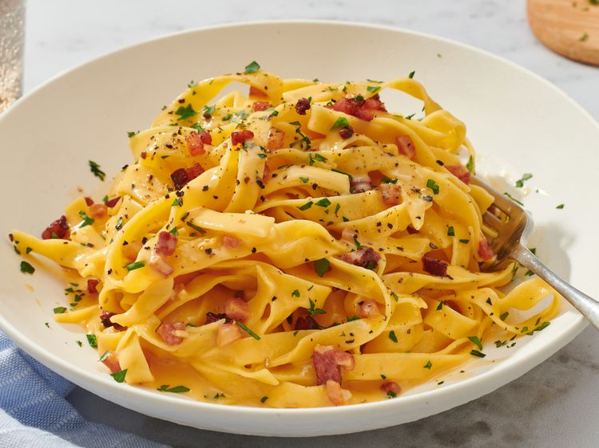

Carbonara Pasta
Back to Home

Carbonara pasta is a classic Italian dish made with eggs, cheese, pancetta, and pepper. It's a creamy and flavorful pasta that is quick and easy to prepare.
Ingredients:
- 12 ounces spaghetti
- 2 large eggs
- 1 cup grated Parmesan cheese
- 4 ounces pancetta or bacon, diced
- 2 cloves garlic, minced
- Salt and freshly ground black pepper, to taste
- 2 tablespoons chopped fresh parsley (optional)
Instructions:
- Cook the spaghetti according to the package instructions until al dente. Reserve 1 cup of pasta water, then drain the pasta.
- In a small bowl, whisk together the eggs and grated Parmesan cheese until well combined. Set aside.
- In a large skillet, cook the diced pancetta or bacon over medium heat until crispy. Add the minced garlic and cook for an additional 1-2 minutes until fragrant.
- Remove the skillet from heat and add the cooked spaghetti to the pancetta and garlic. Toss to combine.
- Slowly pour the egg and cheese mixture over the pasta, tossing quickly to coat the spaghetti without scrambling the eggs. If the sauce is too thick, add reserved pasta water a little at a time until you reach the desired consistency.
- Season with salt and freshly ground black pepper to taste. Garnish with chopped fresh parsley if desired. Serve immediately and enjoy your delicious carbonara pasta!